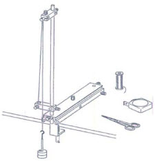

| Objetivo: |
Mostrar un método sencillo para medir el tiempo. Hacer uso de las unidades de medición del tiempo.
|
| |
| Introducción: |
|
La materia, en su movimiento, manifiesta ciclos. La magnitud que esta propiedad genera se llama tiempo. El tiempo es la magnitud
física que mide la duración o separación de las cosas sujetas a cambio, esto es, el período que transcurre entre dos eventos
consecutivos que se miden de un pasado hacia un futuro, pasando por el presente. Es la magnitud que permite parametrizar el
cambio y ordenar los sucesos en secuencias, estableciendo un pasado, un presente y un futuro, y da lugar al Principio de
causalidad, uno de los axiomas del método científico.
Su unidad básica en el Sistema Internacional es el segundo. Su símbolo es s; debido a que es un símbolo y no una abreviación, no
se debe escribir ni con mayúscula, ni como "seg", ni agregando un punto posterior.
|
|
|
| Desarrollo Experimental: |
|
Preparación: montar de acuerdo a la ilustración (Figura 1).
- Fijamos la pinza de mesa con el riel de soporte al borde de la mesa.
- Fijamos la varilla de soporte al riel. Colocamos una nuez en la varilla de soporte cerca del riel.
- Fijamos la otra nuez (con el bulón de cojinetes ya ajustado) al extremo superior de la varilla de soporte. La nuez inferior debe encontrarse paralela al borde de la mesa mientras que la superior debe salir hacia adelante.
- Hacemos dos gazas a ambos extremos de un cordón de 130 cm. de longitud.
- Fijamos una gaza al tornillo de apriete de la nuez inferior.
- Corremos el cordón a través de los bulones de cojinetes y lo dejamos colgando hacia abajo.
- De la segunda gaza colgamos el platillo para pesas ranuradas, con dos pesas ranuradas de 50 g.
- Desplazando la nuez inferior hacia arriba o hacia abajo obtenemos una longitud del péndulo –desde el bulón de cojinetes hasta el centro de los pesas ranuradas- de exactamente 99,5 cm.
Experimento 1:
Hacemos oscilar el péndulo. Debe oscilar paralelo al borde de la mesa; la amplitud de oscilación sólo debe ser de unos 10 cm.
Al detenerse el péndulo a un lado (punto de inversión) activamos el cronómetro (observamos la posición de la manecilla de los
segundos del reloj de pulsera). Después de exactamente 20 semioscilaciones (10 oscilaciones completas, 1 oscilación es una
movimiento completo de ida y regreso del péndulo) detenemos de nuevo el cronómetro (Vemos de la manecilla de los segundos
del reloj de pulsera el tiempo transcurrido).
Duración de 20 oscilaciones: ______s
Duración de 1 semi-oscilación: _____s
Un péndulo de segundos debe medir, por lo tanto, exactamente 99,5 cm.
Experimento 2:
Llevamos a cabo con el péndulo de segundos algunas mediciones del tiempo.
Podemos determinar, por ej. el número de pulsaciones del cuerpo humano durante un minuto (60 seg.). Para lo mismo medimos
primero al estar el cuerpo en reposo relativo y luego después de un esfuerzo físico (correr brevemente o subir escalones). Podemos
también comparar los resultados para dos personas distintas. |
| Resultados y Conclusiones: |
|
1) Un péndulo de 99,5 cm. de longitud necesita 1 segundo para una semi-oscilación (péndulo de segundos).
2) Podemos efectuar mediciones del tiempo con un péndulo cuya duración de oscilación conocemos. Sin embargo, la amplitud de
oscilación del péndulo no debe ser demasiado grande.
|
|
|
| Figura 1: Diagrama del Material |
|  |
| |
|